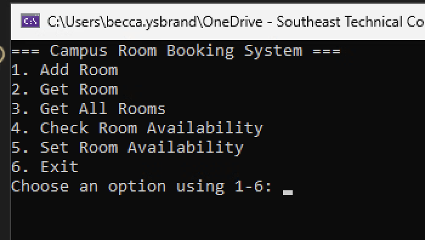

CIS-266 Unit 3 — Campus Room Booking Service
View on GitHub →C# · WCF · SOAP · .NET Framework
A solo WCF SOAP web service built for CIS-266 Unit 3. The project consists of a C# WCF service that manages campus room availability, and a separate console client that consumes the service to add, retrieve, and update room booking status.
Features
- WCF Service Contract — The service interface defines five operations: AddRoom, GetRoom, GetAllRooms, CheckRoomAvailability, and SetRoomAvailability.
- SOAP Communication — The client communicates with the service using SOAP over HTTP, with the service contract enforced via C# attributes.
- Data Contract — A
Roomdata contract exposes RoomNumber, Building, and IsAvailable as serializable members. - Fault Handling — The service throws typed
FaultExceptionerrors for invalid input, duplicate rooms, and missing records. - Duplicate Prevention — Attempting to add a room with an existing room number throws a fault rather than silently overwriting.
- Console Client — A separate .NET console application acts as the service consumer, demonstrating all five service operations.
Sample Code
The WCF service contract defining all available operations:
[ServiceContract]
public interface IService1
{
[OperationContract]
void AddRoom(Room room);
[OperationContract]
Room GetRoom(int roomNumber);
[OperationContract]
List<Room> GetAllRooms();
[OperationContract]
bool CheckRoomAvailability(int roomNumber);
[OperationContract]
void SetRoomAvailability(int roomNumber, bool isAvailable);
}The Room data contract:
[DataContract]
public class Room
{
[DataMember]
public int RoomNumber { get; set; }
[DataMember]
public string Building { get; set; }
[DataMember]
public bool IsAvailable { get; set; }
}Duplicate room prevention with fault handling:
public void AddRoom(Room room)
{
if (room == null)
throw new FaultException("Room cannot be null.");
if (room.RoomNumber <= 0 || string.IsNullOrWhiteSpace(room.Building))
throw new FaultException("Invalid room information.");
if (rooms.Any(r => r.RoomNumber == room.RoomNumber))
throw new FaultException("Room with this number already exists.");
rooms.Add(room);
}Screenshots

Tech Stack
- C# — Primary language for both service and client
- WCF (Windows Communication Foundation) — SOAP-based service framework
- .NET Framework — Runtime environment
- SOAP — XML-based messaging protocol
- Visual Studio — Development environment